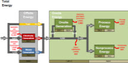

{kind=link}
{kind=link}
Manufacturing Energy Consumption Survey (MECS)
Steel Industry Analysis Brief Change Topic: Steel | Chemical
Introduction
The steel industry is critical to the U.S. economy. Steel is the material of choice for many elements of construction, transportation, manufacturing, and a variety of consumer products. It is the backbone of bridges, skyscrapers, railroads, automobiles, and appliances. Most grades of steel used today - particularly high-strength steels that are lighter and more versatile - were not available a decade ago.1
The U.S. steel industry (including iron production) relies significantly on natural gas and coal coke and breeze for fuel, and is one of the largest energy consumers in the manufacturing sector. The industry accounts for roughly six percent of the total energy consumed in manufacturing (Figure 1). Including fuel and feedstock use, this industry is responsible for approximately 60 percent of the total energy consumed in the primary metals sub-sector.
Energy use in the steel industry has been declining. A ten year historical trend (1991-2002) of the steel industry indicates that there has been a 38 percent decline in the total energy consumption used in the industry (Figure 2). The largest portion, 34 percent of the decline in the total energy consumption occurred between 1998 and 2006.
As will be seen later, the drop in total energy consumption coincides with both a decrease in producer price and production indices according to the Federal Reserve Board (FRB) and the U.S. Bureau of Economic Analysis (BEA). Also, the decline in consumption corresponds with a decrease in energy intensity in the industry.
Energy Consumption
There are two types of energy use in the manufacturing sector; energy consumed for fuel and energy consumed for feedstock. Energy consumed as a fuel includes all energy used for heat, power, and electricity generation, regardless of where the energy was produced. Net electricity is included in the energy consumed as a fuel. However, net electricity does not include electricity from onsite generation or combustible fuel sources.2
Energy used as a feedstock, sometimes referred to as nonfuel, is the energy used as a raw material for purposes other than for heat, power, and electricity generation. For instance, in the steel industry coal is used as a raw material to produce coal coke.2
Energy Consumed as a Fuel - The steel industry used over 1.1 quadrillion Btu (quads) of energy as fuel in 2006. Nearly all of the industry's fuel consumption came from one of four energy sources: coke and breeze, natural gas, "other", and electricity (Figure 3). The "other" fuel constitutes two major byproduct fuels - coke oven and blast furnace gases. These two byproduct fuels account for about 99 percent of the "other" fuel used in the industry. They are recovered and used to generate steam, preheat blast furnace air, or supply heat to other plant processes.
Three of the four major energy sources consumed as a fuel in the steel industry – natural gas, byproduct fuel, and coke and breeze – show a similar declining historical trend, for the same time period, as the total energy consumed for this industry. However, the consumption of electricity increased during this fifteen year cycle. Particularly, the byproduct fuel consumption decreased from 1994 to 2006, whereas the coke and breeze consumption decreased from 2002 to 2006 (Figure 4).
End Use of Fuel Consumption - The Manufacturing Energy Consumption Survey (MECS) collects fuel consumption by end use for six major energy sources – electricity, natural gas, coal, LPG, diesel/distillate, and residual fuel oil. Coke, an energy source used for fuel in a blast furnace, is not included as one of the six major energy sources when collecting for end use in the MECS. A blast furnace is used to turn iron ore into pig iron, an intermediate material used in the production of iron and steel.
Figure 5 illustrates that this industry uses approximately 30 percent of its fuel consumption for process heating, although that percentage does not include the coke that is used to fuel the blast furnace. Though the MECS does not collect end uses for coke, the bulk of what is shown as "not reported/not asked" in Figure 5 is the coke used to fuel the blast furnace. The use of the blast furnace by this industry accounts for the vast majority of the process heating.
There has been little change to the various end uses reported in the manufacturing sector between 1998 and 2006. Figure 5 illustrates a similar pattern in the steel industry during the same time period.
Energy Used as a Feedstock - The steel industry used slightly under half a quad (431 trillion Btu) for feedstock use in 2006. This accounts for approximately six percent of the energy used as a feedstock in the manufacturing sector (Figure 6).
The major energy source that is used as a feedstock in the steel industry is coal, and accounts for 80 percent of the total feedstock used in this industry. Coal is baked in a heated oven to produce coke and breeze. This process allows for the impurities of the coal to be burned off while not allowing the carbon content of the coal to burn.4 Coke and breeze are used for two purposes: to fuel the blast furnace, and to deoxygenate the iron ore and turn it into wrought iron. It's the addition of limestone to the blast furnace along with the heat from the coke and breeze that turns the wrought iron into pig iron.
Coal used as a feedstock in this industry accounts for 83 percent of the coal feedstock used in the manufacturing sector (Figure 7), and 98 percent of the coal feedstock used in the primary metals sub-sector.
Energy Expenditures
The total energy expenditures in the steel industry were over six billion dollars in 2002, 97 percent coming from electricity, natural gas, coke and breeze, and coal (Figure 8). Electricity is the largest expenditure and accounts for approximately 32 percent of the total energy expenditures in this industry.
The electricity expenditures increased by 70 million dollars between 1998 and 2002 in this industry. At least partially, electricity accounts for such a large share of expenditures because electric-arc furnaces, more efficient in producing iron and steel, have become more common in the industry. Table 1 illustrates the evolution of iron and steel mills transitioning away from using blast furnaces to electric-arc furnaces between 1997 and 2002.
| 1997 | 2002 | 1997 Percent of Total | 2002 Percent of Total | |
|---|---|---|---|---|
| Number of Establishments with Blast Furnaces | 21 | 9 | 7.5% | 2.4% |
| Number of Establishments without Blast Furnaces | 258 | 364 | 92.5% | 97.6% |
| Value of Shipments with Blast Furnaces (Million U.S. Dollars) | 29,086 | 12,451 | 51.0% | 26.4% |
| Value of Shipments without Blast Furnaces (Million U.S. Dollars) | 27,983 | 34,720 | 49.0% | 73.6% |
| Purchased Electricity with Blast Furnaces (Trillion Btu) | 52.8 (sic) | 26.2 (sic) | 34.6% | 14.1% |
| Purchased Electricity without Blast Furnaces (Trillion Btu) | 100.0 | 158.9 | 65.4 | 85.9 |
| Sources: U.S. Census Bureau, Economic Census - Manufacturing Industry Series, Iron and Steel Mills - Table 3: Detailed Statistics by Industry, 1997 and 2002 | ||||
Figure 9 shows the historical energy expenditures per the total establishment costs in the steel industry. The percentages do not deviate much between 1991 and 1998; however, there was a sharp increase in the percentage between 1998 and 2002.
The average prices for purchased energy in the steel industry did not deviate much except for natural gas. Table 2 illustrates that the average natural gas price increased from $2.54 per million Btu in 1994 to $3.89 per million Btu in 2002. In contrast, the average price for coal and coke increased by only $0.15 and $0.27 per million Btu respectively, and electricity decreased by $0.57 per million Btu during the same time period. The increased price for natural gas could partially explain why there was a reduction in the energy consumption in the steel industry.
| Year | Total | Electricity | Natural Gas | Coal | Coke |
|---|---|---|---|---|---|
| 2002 | 4.18 | 10.40 | 3.89 | 1.93 | 4.49 |
| 1998 | 3.29 | 10.34 | 2.78 | 1.40 | 4.71 |
| 1994 | 2.93 | 10.97 | 2.54 | 1.78 | 4.22 |
| Source: Energy Information Administration, Manufacturing Energy Consumption Survey - Table 7.2: Average Prices for Purchased Energy Sources, 1994, 1998, and 2002 | |||||
Producer Prices and Production
Table 3 shows the producer price indices for the steel industry according to the U.S. Bureau of Economic Analysis (BEA). Producer prices are the prices that the industry received for their goods. As is shown in Table 3, the indices have declined between 1998 and 2002.
Additionally, Table 4 below illustrates the production indices for the steel industry according to the Federal Reserve Board (FRB) and the BEA. Similar to the producer price indices shown in Table 3, the production indices in Table 4 have also decreased between 1998 and 2002.
The data in Table 3 shows that in 2002 the industry received relatively lower prices for their steel products. In turn, lower prices would tend to lessen their output, as evidenced by the data in Table 4. A decrease in the production of steel products means that there often will be a reduction in the industry's energy consumption and is supported by the data in Figure 2. As discussed in the next section, energy intensity can also be an explanation for the drop in the industry's energy consumption.
| Producer Price Indices | 1998 | 1999 | 2000 | 2001 | 2002 |
|---|---|---|---|---|---|
| BEA | 107.028 | 97.691 | 100 | 93.825 | 97.832 |
| Source: U.S. Bureau of Economic Analysis, Gross-Domestic-Product-(GDP)-by Industry Data | |||||
| Production Indices | 1998 | 1999 | 2000 | 2001 | 2002 |
|---|---|---|---|---|---|
| FRB | 100.280 | 101.003 | 100 | 90.455 | 90.181 |
| BEA | 99.796 | 102.69 | 100 | 90.259 | 92.603 |
| Sources: Federal Reserve Board, G.17: Industrial Production and Capacity Utilization; U.S. Bureau of Economic Analysis, Gross-Domestic-Product-(GDP)-by Industry Data | |||||
Energy Intensity
Typically in dealing with energy statistics, energy intensities are measured as a ratio of energy consumption per an economic measure. One such economic measure often used is the dollar value of shipments. This is the dollar value received for the complete output at the company's net billing price, including charges for cooperative advertising and warranties. This does not include excise taxes, freight or transportation charges, or installation charges.5
Another economic measure that is commonly used when analyzing energy intensities is the dollar of value added. This is a measure of manufacturing activity that is derived by subtracting the cost of materials (which covers materials, supplies, containers, fuel, purchased electricity, and contract work) from the value of shipments. This difference is then adjusted by the net change in finished goods and work-in-progress between the beginning- and end-of-year inventories.6
By either means, the energy intensity has declined over the past ten years. The energy consumption per dollar value of shipments has steadily decreased for this industry (Figure 10) as has the energy consumption per dollar of value added (Figure 11). Decreases in these energy intensities can be an indication that the energy efficiency in the industry has improved.
Energy-Management Activities
Over the past several years manufacturers in general have increasingly recognized the correlation between rising energy costs and their ever shrinking profit margins. Through this understanding, manufacturers have greatly improved their energy-management practices. Although Table 5 suggests that the steel industry has not followed this trend the majority of the data represented in the table is not statistically significant.
Special rate schedules are natural gas and electricity contracts that utility companies sell to their industrial customers at a reduced rate because of the sheer volume of energy usage. Although this industry started using more electric-arc furnaces to produce steel, their participation percent for special rate schedules decreased from 1998 to 2002. This decrease occurred during a time when the deregulation of both the natural gas and electricity markets were becoming more prevalent, and industrial customers started purchasing their energy from third party suppliers. The industry also stopped using as many full-time energy managers; however, this reduction may be a result of the employees having more than just energy-management responsibilities.
Footnotes
1 U.S. Department of Energy, Energy Efficiency and Renewable Energy, Industrial Technologies Program, Steel Industry of the Future.
2 Energy Information Administration, Manufacturing Energy Consumption Survey, MECS Definition of Fuel Use, http://www.eia.doe.gov/emeu/mecs/mecs98/datatables/fueldef.html
3 Energy Information Administration, Manufacturing Energy Consumption Survey, MECS Definition of NonFuel (Feedstock), http://www.eia.doe.gov/emeu/mecs/mecs98/datatables/nonfueldef.html
4 American Iron and Steel Institute, Coke Production for Blast Furnace Ironmaking
5 Energy Information Administration Glossary, "Value (of shipments)"
6 Energy Information Administration Glossary, "Value added by manufacture"
Features
Other End Use Surveys
DOE Uses MECS Data
Manufacturing Energy and Carbon Footprints

Associated Analysis
Manufacturing Energy Sankey Diagrams
Manufacturing Energy Flows Tool